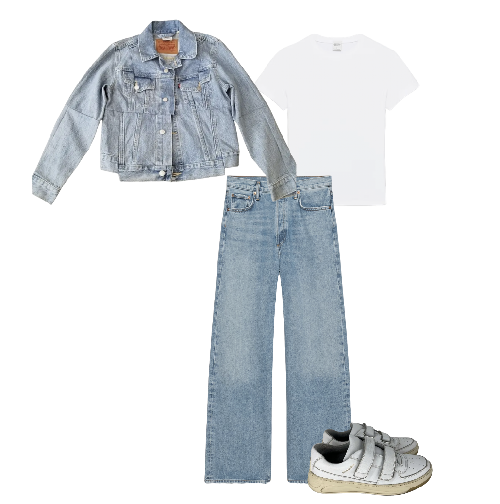
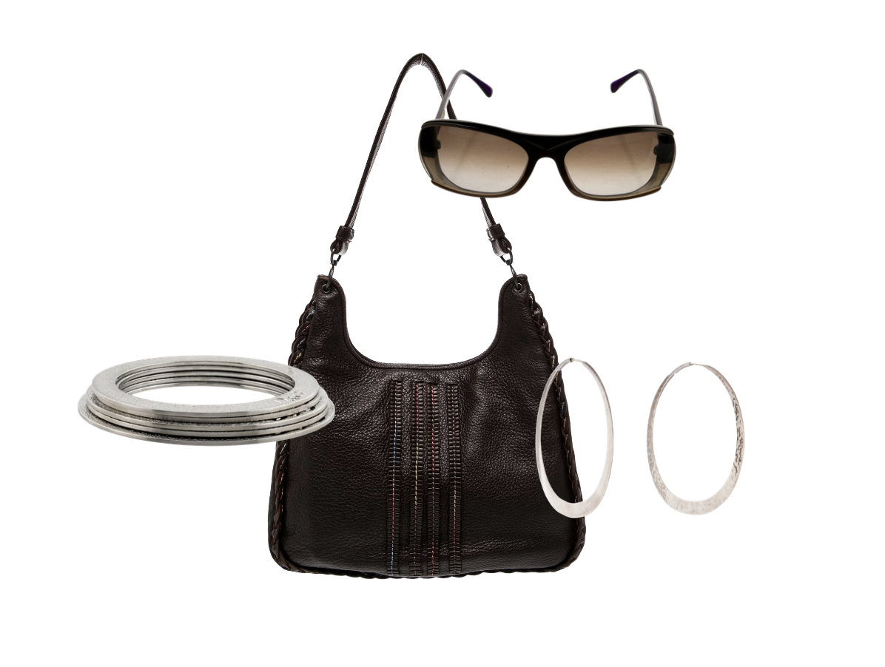
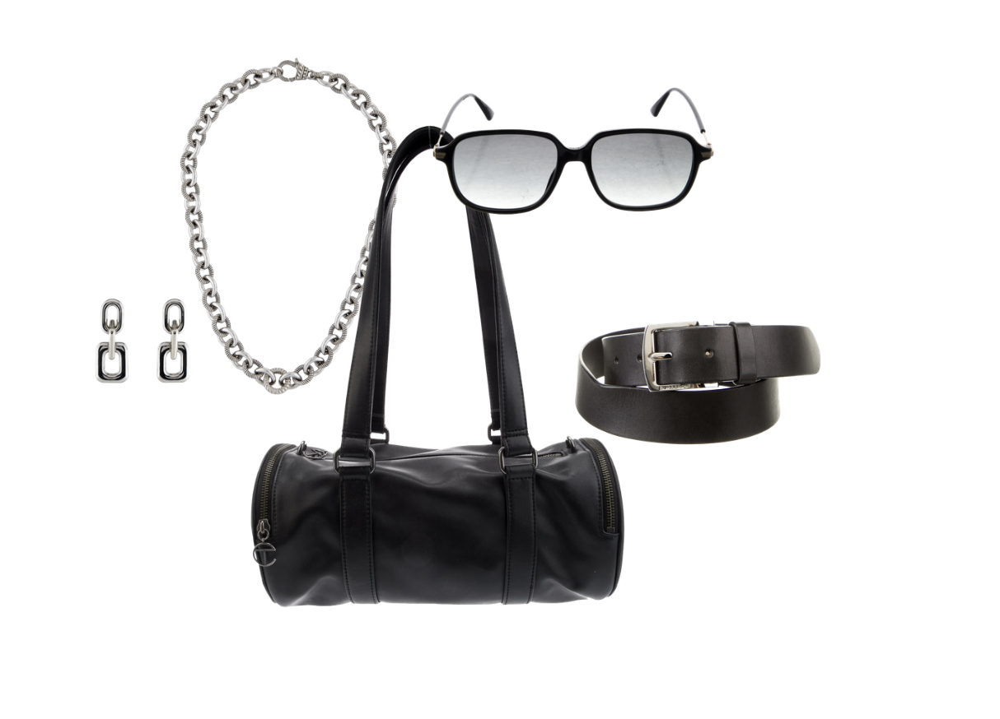

Love the Canadian Tuxedo! This is definitely a more casual day-to-day outfit, but I think we can make it a bit better.
Accessories are very important for elevating and styling a simple base. In this base, contrasting with darker colors like black or brown would make it cohesive.
As for jewelry, cooler tones call for silver metals.
A bag and a pair of sunnies could also really pull this outfit together.
Click below on a group of accessories to see your final outfit!

This choice is a bit simple, but slightly edgy with the leather purse, and bangle stack. The brown bag, and sunnies connect, while the silver jewelry matches the buttons on the jacket.

This choice is edgier, and strong on the chunky jewelry. The bag adds depth with its silhouette, matching the sunglasses.